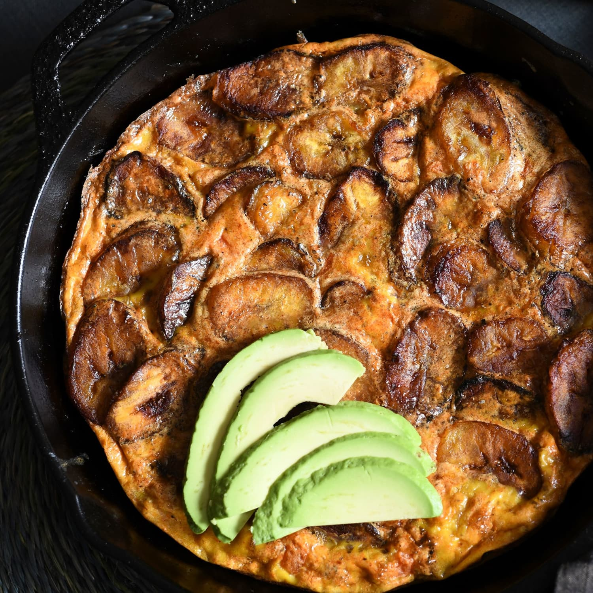

Discover delicious recipes, explore new flavors, and enjoy simple meals made with everyday ingredients.
Explore RecipesPlantain frittata is a delicious and nutritious dish made with ripe plantains, eggs, vegetables, and seasonings, all cooked together like an omelette. It is popular for breakfast or brunch because it is easy to prepare, filling, and combines the sweet taste of plantain with savory flavors.
View Recipe
Calories
Protein
Carbs
Fat
Yes, but the texture and flavor will be less sweet.
Absolutely. Sausage, bacon, or chicken work perfectly.